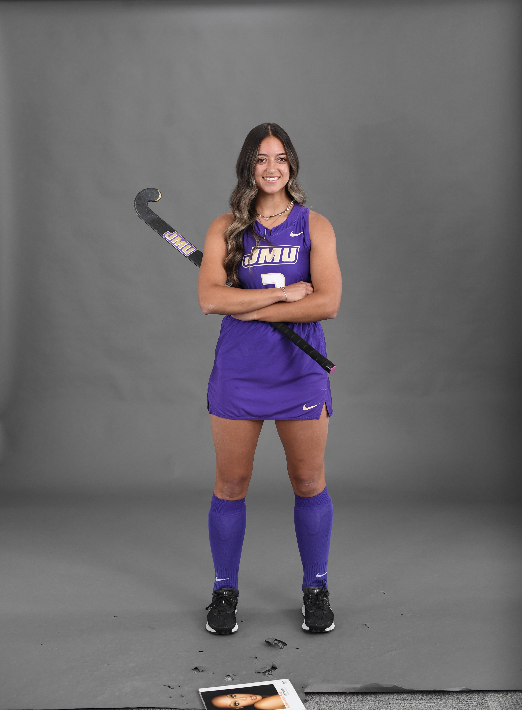

1234 Beauty Way
Virginia Beach, Virginia, 23456
carawavc@dukes.jmu.edu
Motivated college student with strong communication and problem-solving skills, seeking internship opportunities to gain practical experience in Social Media managing.
James Madison Univeristy , Harrisonburg, Virginia
Graduating May, 2024
HTML 5, Bootstrap 4, CSS3
Windows, Web Server
Adobe Creative Cloud (Photoshop, InDesign, and Illustrator), Microsoft Office (Word, Excel, Powerpoint).
Lake Gaston Lodges, Valentines, VA - Intership
SOVA Tea Company, Virgnia Beach, VA - Intership